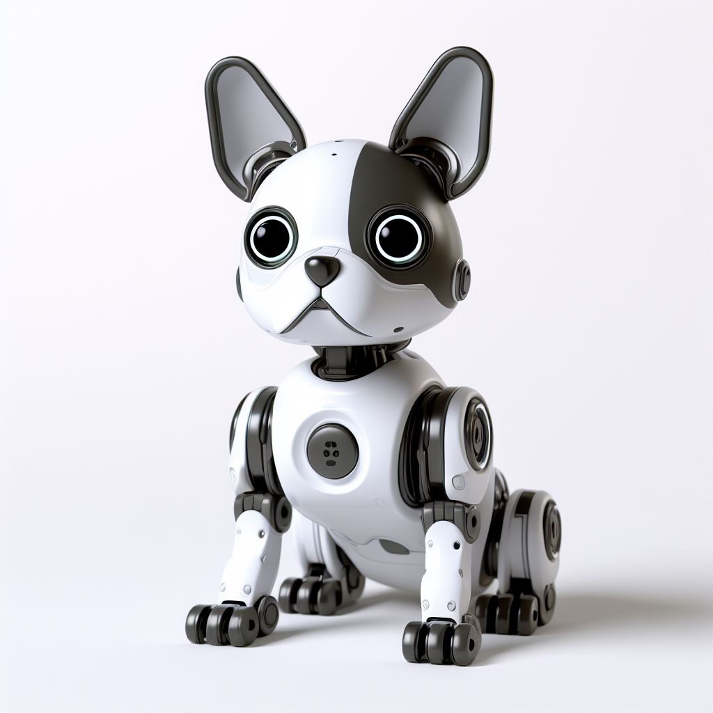
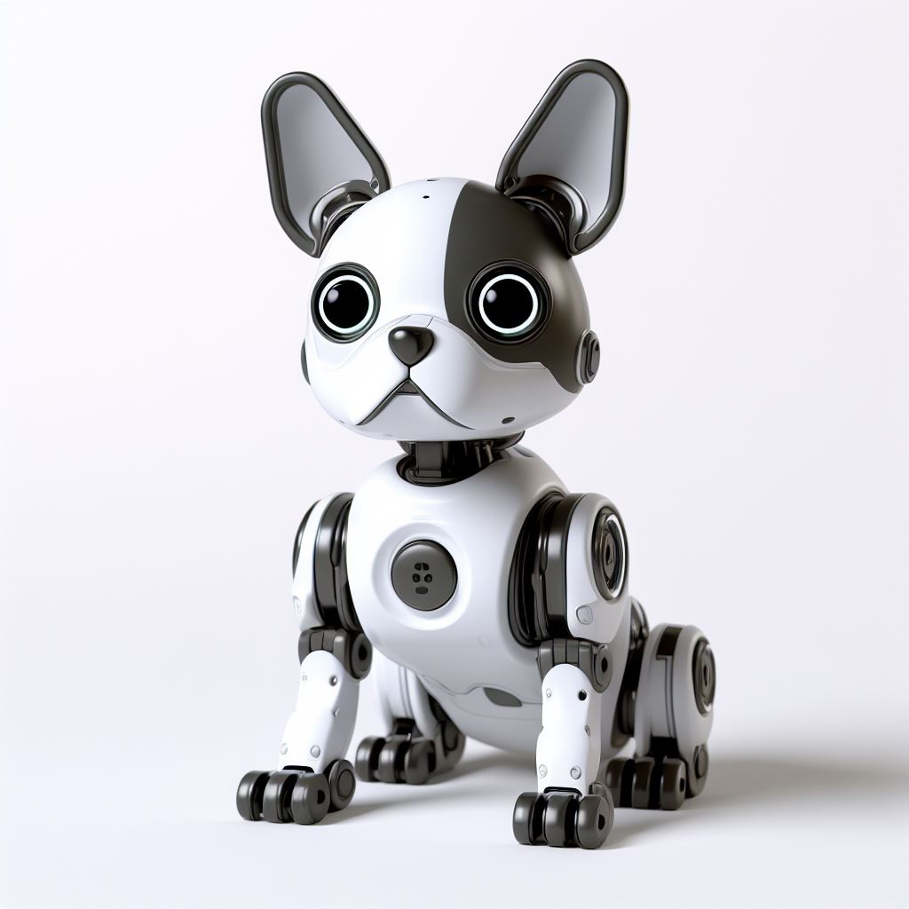
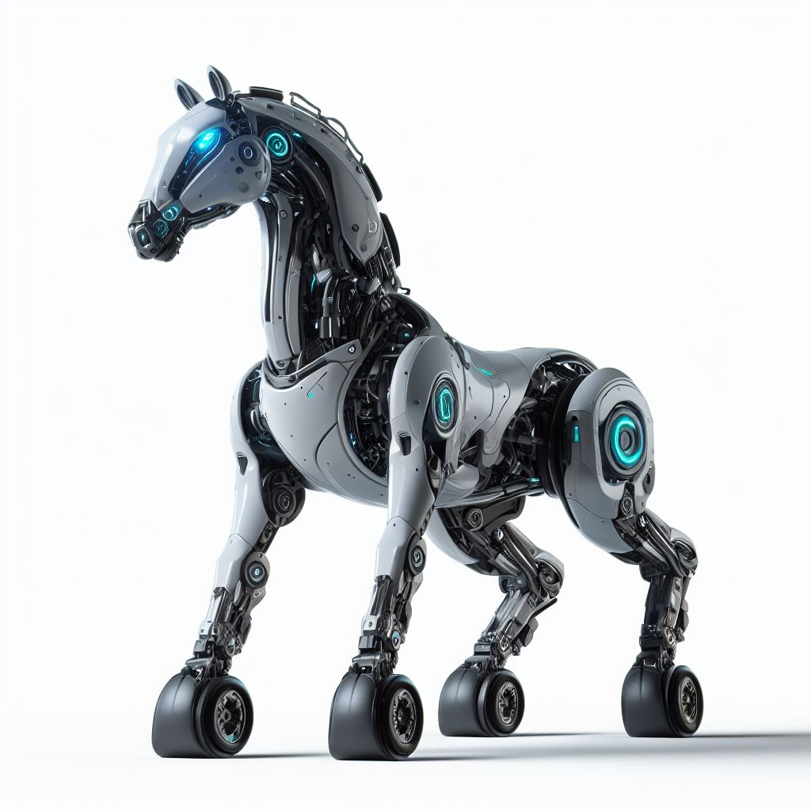
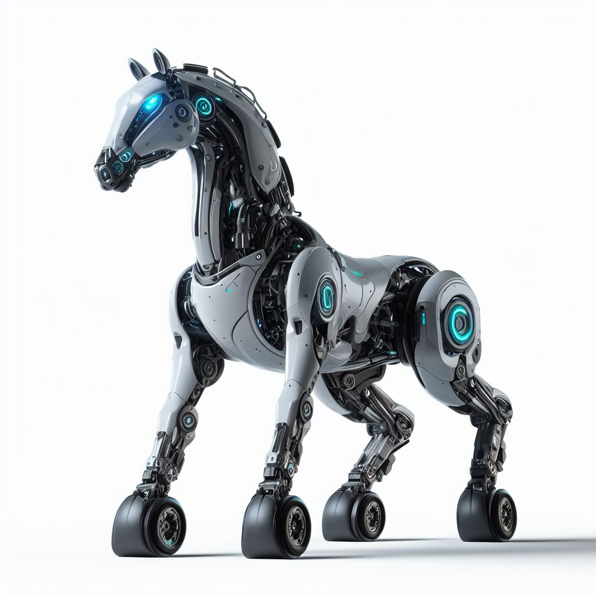
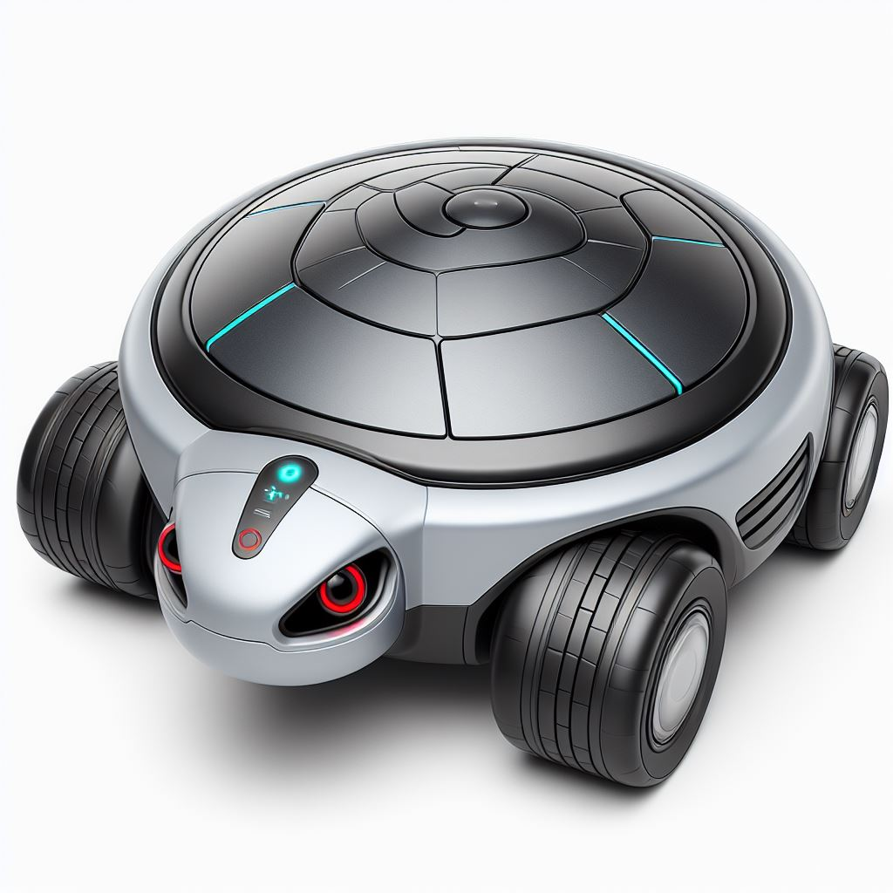
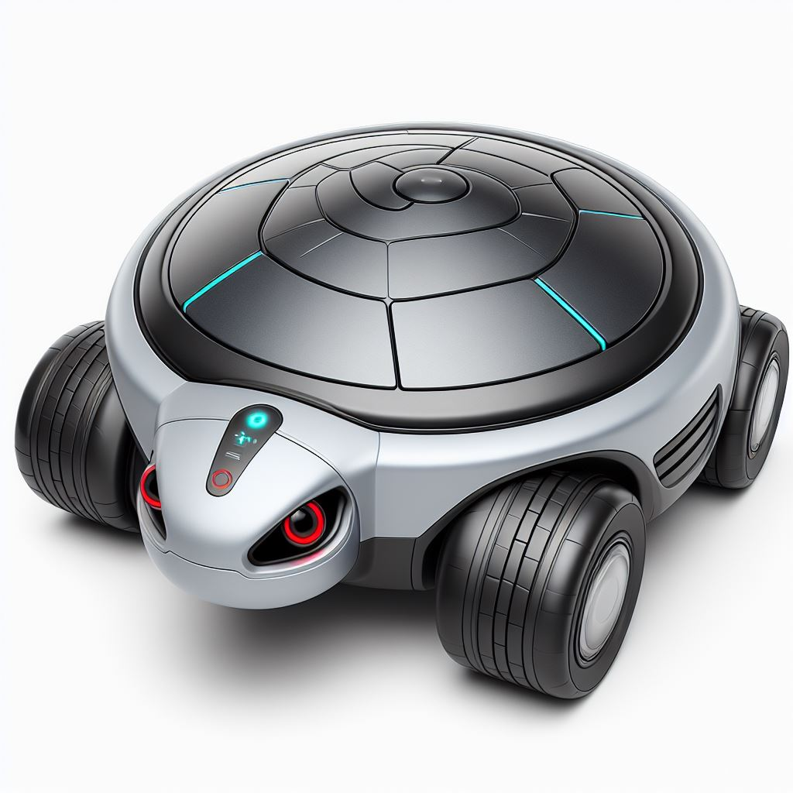
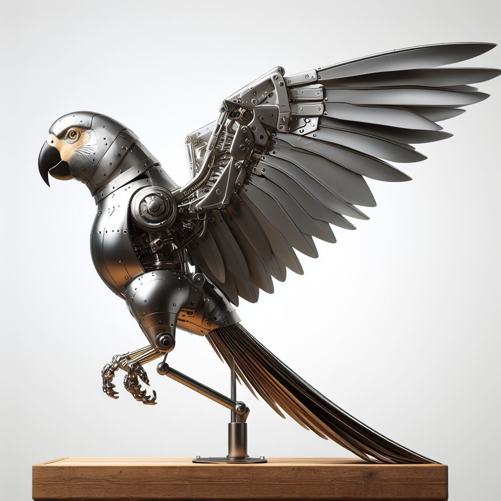
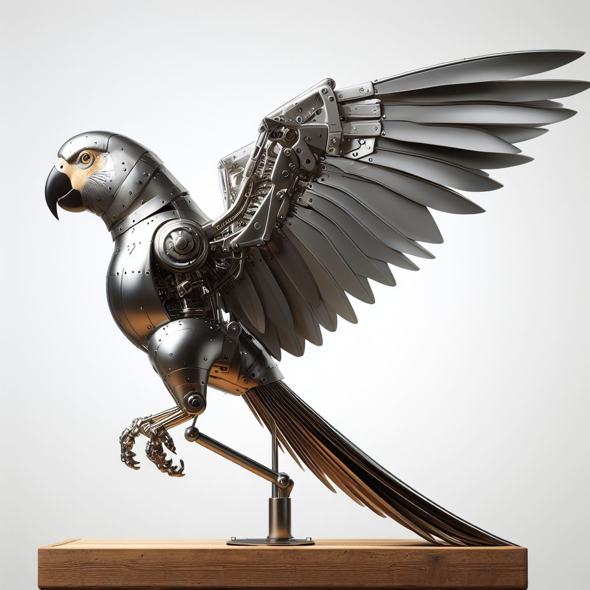

Robo-dog
Models: RD1001, RD1002
Special price: $215.99
Order now!- Introducing the Robo-Pup: your ultimate four-legged mechanical companion! This cutting-edge canine amalgamates the charm of a loyal pup with the efficiency of advanced robotics.
- Unlike its furry counterparts, this robotic wonder doesn't require feeding, grooming, or bathroom breaks, making it the perfect hassle-free addition to any household.
- With its sleek design and state-of-the-art sensors, the Robo-Pup not only keeps your space tidy but actively assists in cleaning up messes instead of creating them.
- No more chewed-up shoes or overturned trash cans- this tech-savvy dog is programmed to help maintain a pristine environment.
- More than just a tidy sidekick, the Robo-Pup is a smart assistant at your beck and call. Through voice commands or programmed instructions, it adeptly performs tasks, from fetching items to turning off lights, showcasing its versatility and adaptability to your needs.
- With the Robo-Pup, you get the unwavering companionship of a dog without the associated responsibilities, offering a seamless blend of technology and affectionate companionship for the modern lifestyle!
 

 

 
